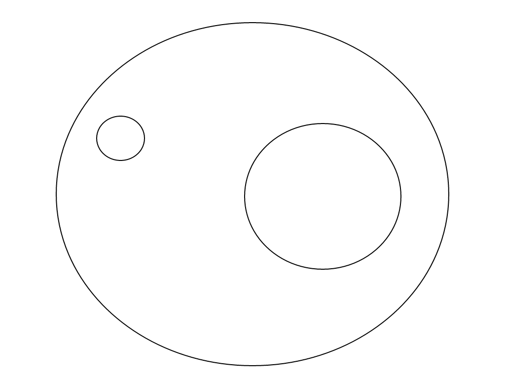

Presented by Milan Popović / @komita1981
VP of engineering @Navus Consulting
PHP developer
I like to learn and share knowledge
Active member of PHP Srbija
Knowledge
Hard work
Discipline
All men by nature desire knowledge
Aristotle
Collect, organize and maintain knowledge
Learn basics of software architecture and design patterns
Follow good practice and principles
Read books, blogs...
Go to conferences and meetups
Find mentor and be mentor
Measure your improvement
Make plan
Excellence is an art won by training and habituation. We do not act rightly because we
have virtue or excellence, but we rather have those because we have acted rightly.
We are what we repeatedly do. Excellence, then, is not an act, but a habit.
Aristotle
To become a better programmer you must invest time and effort
Practice everything you learn
Exceptional performance requires working smart in addition to working hard
Read a lot. Write a lot.
Stephen King
I hear and I forget. I see and I remember. I do and I understand.
Confucius
Men acquire a particular quality by constantly acting in a particular way
Aristotle
Behavior in accord with rules of conduct
Behavior and order maintained by training and control
Disciplined developer raise the level of productivity in others
Discipline Makes Strong Developers
Choice-supportive bias
Priming
Informational Conformity
Halo effect
Hyperbolic discounting
Reactance
Dunning-Kruger effect & Imposter syndrome

Ask
Tell
Show
Keep on learning